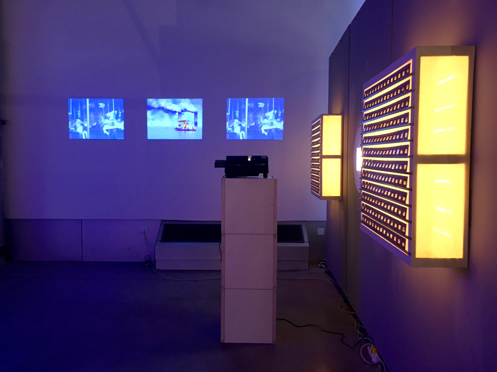
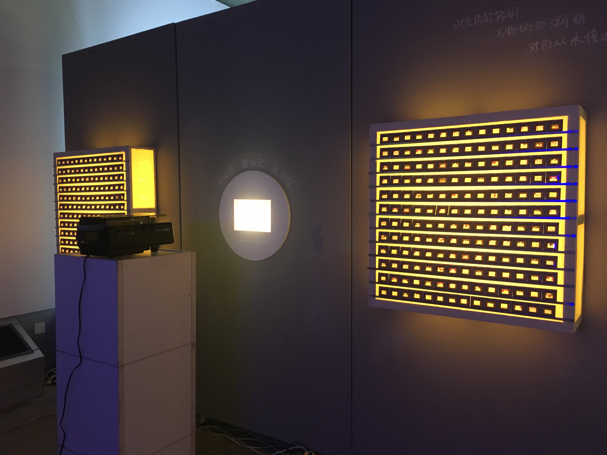
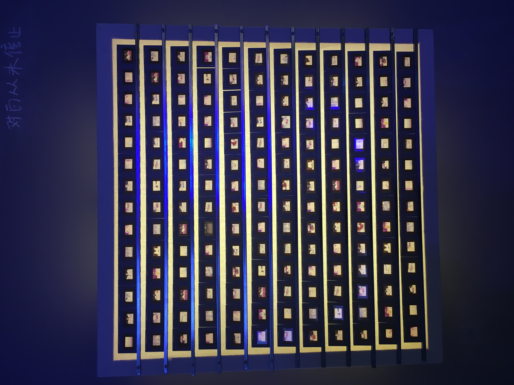
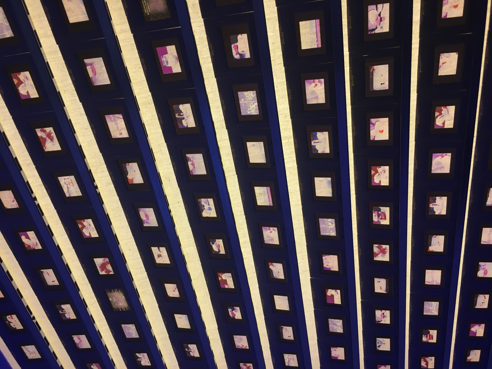

对白∙书写 Dialogue
对白∙书写 Dialogue, 2017
Time: 3 mins 10 seconds
Technique: film print, lightbox build
Material: film papers, white fabric, wood, LED lightline
Software: After Effect, Premiere, Photoshop
Click here for watching Dialogue video on Vimeo.